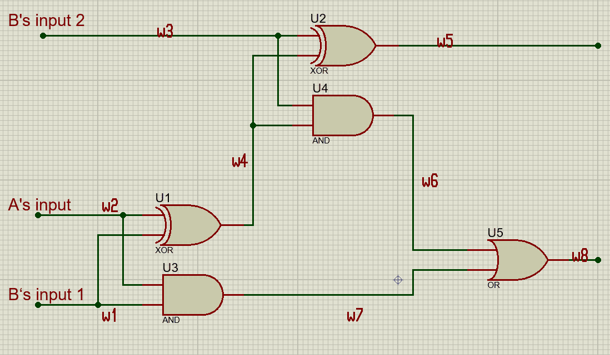

之前提到安全计算要做到的是计算\(\mathcal F(x,y)\)，其中\(x\in X,y\in Y\)，分别是两个参与方\(P_1,P_2\)持有。
乱码电路的关键思想在于将需要计算的函数\(\mathcal F\)表示为一个查找表。
查找表
我们现在已经有了一个函数\(\mathcal F(x,y)\)，一个十分简单粗暴的方法在于，我们枚举这个函数的所有输入\(x,y\)并计算对应的输出\(\mathcal F(x,y)\)，构造这样的一张表\(T\)。
举个例子，A和B各扔了一个骰子，A的点数是\(x\)，而B的点数是\(y\)，我们需要比较两个人的点数谁更大，如果A比B大，则输出1，否则输出0。也就是：
\[ \mathcal F(x,y)= \begin{cases} 1,&x>y\\[2ex] 0,&x\leq y \end{cases} \]
这样子就可以构造出一张查找表\(T_{x,y}\)：
| x/y | 1 | 2 | 3 | 4 | 5 | 6 |
|---|---|---|---|---|---|---|
| 1 | 0 | 0 | 0 | 0 | 0 | 0 |
| 2 | 1 | 0 | 0 | 0 | 0 | 0 |
| 3 | 1 | 1 | 0 | 0 | 0 | 0 |
| 4 | 1 | 1 | 1 | 0 | 0 | 0 |
| 5 | 1 | 1 | 1 | 1 | 0 | 0 |
| 6 | 1 | 1 | 1 | 1 | 1 | 0 |
那么只要去查找表\(T_{x,y}\)中对应\(x,y\)位置上的值，就可以知道\(\mathcal F(x,y)\)的结果了。
现在，A构造了这样的一张查找表，然而，需要计算出函数的输出需要A和B两个人的共同努力，A无法独自得到结果。而为了保证两个人点数的隐私性，A也不能把自己的点数告诉B，或者去询问B的点数。
乱码电路的构造思路在于，A可以去用密钥加密这张表并发给B，然后选择相应的密钥发给B，从而不会泄露信息。
也就是，对于表中的每一个项目\(T(x,y)\)，A都会去生成行密钥和列密钥\(k_x,k_y\)去用来加密这个表项。接下来，A把加密之后的表\(Enc_{k_x,k_y}(T_{x,y})\)发给B。同时，A还会把自己输入\(x\)的这一行对应的行密钥\(k_x\)发给B。而B收到这些消息之后，通过一个不经意传输协议，从\(|Y|\)个列密钥中选择一个\(k_y\)。这样子，B就能够去解密出自己需要的密文。
标识置换
上面的方法确实解决了一部分问题，但是一个最大的问题需要去解决。B收到了加密后的查找表，某一行的行密钥\(k_x\)和自己输入对应的列的列密钥\(k_y\)。B知道自己的输入，所以他知道该解密表上的哪一列，但是他不知道A的输入，也就是他并不知道该解密哪一行。
很明显，应该查找哪一行属于是一个隐私信息，因为这对应了A的输入。
一种思路在于，可以在查找表中构造一些特殊信息。例如：
| x/y | 1 | 2 | 3 | 4 | 5 | 6 |
|---|---|---|---|---|---|---|
| 1 | 00000000 | 00000000 | 00000000 | 00000000 | 00000000 | 00000000 |
| 2 | 10000000 | 00000000 | 00000000 | 00000000 | 00000000 | 00000000 |
| 3 | 10000000 | 10000000 | 00000000 | 00000000 | 00000000 | 00000000 |
| 4 | 10000000 | 10000000 | 10000000 | 00000000 | 00000000 | 00000000 |
| 5 | 10000000 | 10000000 | 10000000 | 10000000 | 00000000 | 00000000 |
| 6 | 10000000 | 10000000 | 10000000 | 10000000 | 10000000 | 00000000 |
在每一个查找表表项后面加上若干个0。很明显的，当B使用了正确的密钥去解密某个表项时，他得到的答案的后面若干比特都是0。而使用错误的密钥去解密某个表项，后面若干比特都是0的概率基本上趋近于0。
这样，B每次都会随机选择一行去解密，如果解密出来的结果满足最低的若干bit都是0，那么就认为是找到了对应的结果。否则换一行去重新解密。
然而，这样的效率是非常低的，从一张非常巨大的查找表里面找到一个信息要反复非常多次的寻找。
一个思路是Beaver et al.提出的标识置换（point-and-permute）。标识置换是将密钥的一部分替换为一个置换标识，用来标识这个密钥是加密哪一行（列）。一个简单的例子是，对于上面掷骰子的查找表，选择3bit作为标识，001代表第一行，010代表第二行，以此类推。最后3bit为001的密钥用来加密第一行查找表，010的密钥用来加密第二行查找表。
优化
上面的方法实际上给出了乱码电路的一个思路，但是问题在于，如果\(\mathcal F\)的定义域非常大，那么计算这个乱码电路也就需要非常大的空间和时间复杂度。
而简单的门电路定义域的大小只有4，用来做查找表是非常容易的。
| \(x\) | \(y\) | \(\mathcal F(x,y)=x\And y\) |
|---|---|---|
| 0 | 0 | 0 |
| 0 | 1 | 0 |
| 1 | 0 | 0 |
| 1 | 1 | 1 |
如果我们能够将需要计算的函数\(\mathcal F\)表示一个有许多门电路组成的布尔电路\(\mathcal C\)，并且分别求解各个门电路的的输出，我们也就能够去计算函数\(\mathcal F\)的输出。但是要注意到，中间的门电路的结果不能公开——因为有可能泄露某一方的秘密输入。
乱码电路中的解决方案在于指定导线上的标签和取值：
参与方A为\(\mathcal C\)中的每一条导线\(w_i\)指定密钥\(k_i^0\)和\(k_i^1\)。导线\(w_i\)的取值（0或者1）是导线值，导线值相对应了导线标签，也就是指定的密钥\(k_i^0\)或\(k^1_i\)。
给定了这个电路\(\mathcal C\)一个输入之后，每条导线都有一个确定的导线值即激活值，这个激活值也就对应了一个导线标签，也就是密钥。
对于一个门电路\(G\)，可以构建一个这样的经过加密的查找表：
\[ T_G=\begin{cases} {\rm Enc}_{k_i^0,k_j^0}(k_t^{G(0,0)})\\[2ex] {\rm Enc}_{k_i^0,k_j^1}(k_t^{G(0,1)})\\[2ex] {\rm Enc}_{k_i^1,k_j^0}(k_t^{G(1,0)})\\[2ex] {\rm Enc}_{k_i^1,k_j^1}(k_t^{G(1,1)}) \end{cases} \]
这个表中每一行都是门电路输出值对应的导线标签的密文。A构造这张表后，B能够通过交互得到得到输出对应的导线标签，但是不能够得到导线的激活值。
在执行乱码电路的过程中，A构造乱码电路中所有门电路的查找表并且进行标识置换，将置换后的查找表即乱码表发送给B。
接下来，A将自己的导线输入值对应的激活值发送给B。对于乱码电路中B的导线的输入值，A和B通过一个2选1-OT传输激活标签。获得了这些标签之后，B就能够计算得到最终的结果对应的标签，发送给A解密之后也就能够得到函数最后的结果。
以一个简单的例子来说明：

这是一个全加器，我们假设A输入为一个加数，B输入为另一个加数和进位，电路最终的输出为导线\(w_8\)对应的加法结果和导线\(w_5\)对应的进位。
首先A会构造各个门电路对应的乱码表：
| U1（XOR） | U2（XOR） | U3（AND） | U4（AND） | U5（OR） |
|---|---|---|---|---|
| \({\rm Enc}_{k_1^0,k_2^0}(k_4^0)\) | \({\rm Enc}_{k_3^0,k_4^0}(k_5^0)\) | \({\rm Enc}_{k_1^0,k_2^0}(k_7^0)\) | \({\rm Enc}_{k_3^0,k_4^0}(k_6^0)\) | \({\rm Enc}_{k_6^0,k_7^0}(k_8^0)\) |
| \({\rm Enc}_{k_1^0,k_2^1}(k_4^1)\) | \({\rm Enc}_{k_3^0,k_4^1}(k_5^1)\) | \({\rm Enc}_{k_1^0,k_2^1}(k_7^0)\) | \({\rm Enc}_{k_3^0,k_4^1}(k_6^0)\) | \({\rm Enc}_{k_6^0,k_7^1}(k_8^1)\) |
| \({\rm Enc}_{k_1^1,k_2^0}(k_4^1)\) | \({\rm Enc}_{k_3^1,k_4^0}(k_5^1)\) | \({\rm Enc}_{k_1^1,k_2^0}(k_7^0)\) | \({\rm Enc}_{k_3^1,k_4^0}(k_6^0)\) | \({\rm Enc}_{k_6^1,k_7^0}(k_8^1)\) |
| \({\rm Enc}_{k_1^1,k_2^1}(k_4^0)\) | \({\rm Enc}_{k_3^1,k_4^1}(k_5^0)\) | \({\rm Enc}_{k_1^1,k_2^1}(k_7^1)\) | \({\rm Enc}_{k_3^1,k_4^1}(k_6^1)\) | \({\rm Enc}_{k_6^1,k_7^1}(k_8^1)\) |
接下来我们假设A输入为0，B的输入加数为0，进位为1。那么乱码电路执行的过程如下：
A将激活标签\(k_1^0\)发送给B，并通过2选1-OT将标签\(k_2^0\)和\(k_3^1\)发送给B。
B在接收到这些标签之后，可以在门电路\(\rm U1\)对应的乱码表中使用得到的\(k_1^0,k_2^0\)解密出导线\(w_4\)对应的表项\({\rm Enc}_{k_1^0,k_2^0}(k_4^0)\)的值即\(k_4^0\)。同样针对门电路\(\rm U3\)可以使用\(k_1^0,k_2^0\)解密出对应的值\(k_7^0\)，针对门电路\(\rm U2\)解密出\(w_5^1\)，针对门电路\(\rm U4\)解密出\(k_6^0\)，接下来最后针对门电路\(\rm U5\)解密出\(k^8_0\)。
在计算出所有标签之后，B将\(k_5^1\)和\(k_8^0\)发送给A，A可以解密出结果为1和0。
实际上，A可以直接将输出导线的解码表发送给B，这样B就没有必要将结果再发送给A进行解密。
参考资料
[1] David Evans; Vladimir Kolesnikov; Mike Rosulek, A Pragmatic Introduction to Secure Multi-Party Computation , now, 2018.